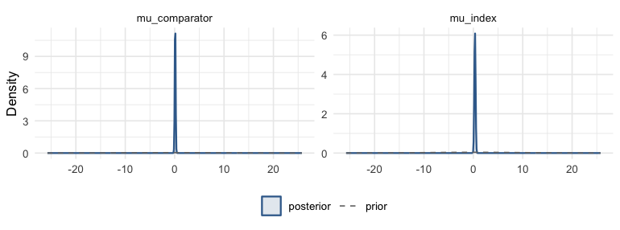
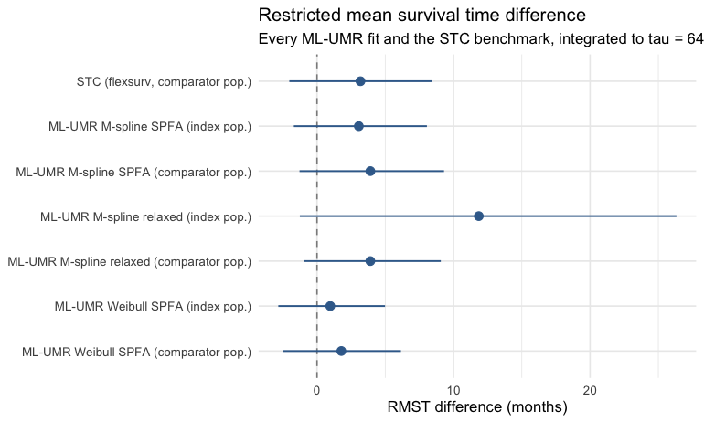
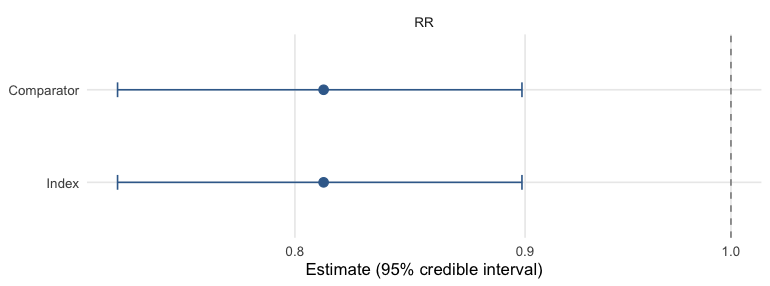
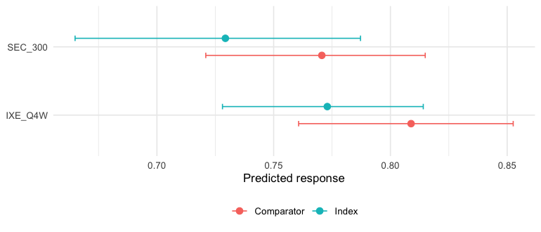

Continuous outcomes: an unanchored mean-difference comparison
Source:vignettes/continuous-outcomes.Rmd
continuous-outcomes.RmdThis vignette is a complete worked example of an
unanchored indirect comparison for a
continuous endpoint, using mlumr’s bundled
shoulder_ipd and shoulder_agd example data. It
is the continuous-outcome analogue of
vignette("binary-outcomes"); for the shared
data-preparation machinery see
vignette("data-preparation"), for sampler/prior/diagnostic
detail see vignette("fitting-and-diagnostics"), and for how
to choose between methods see
vignette("choosing-a-method").
Simulated data.
shoulder_ipd/shoulder_agdare simulated (not real patient records): they are generated with thesynthpoppackage (sequential CART) (Nowok et al. 2016) from the FIMPACT 10-year shoulder trial (Kanto et al. 2025) (dataset CC BY 4.0), preserving its covariate and covariate-outcome relationships (fidelity validated with thesyntheticdatapackage), much asmultinmabuilds its own example data. The two trial arms are treated as separate single-arm sources to illustrate an unanchored comparison; in a real ML-UMR application the comparator would come from a different study.
The clinical question
We want the relative efficacy of two treatments for subacromial shoulder pain on pain on activity (a visual analogue scale, VAS 0-100, lower = better) at 24 months, when:
-
Index (IPD). We hold individual patient data for
arthroscopic subacromial decompression
(
ASD). -
Comparator (AgD). Only published aggregate data are
available for exercise therapy (
ET): an arm mean, its standard error, and a baseline-characteristics table.
The two arms come from single-arm sources with no common comparator,
so the comparison is unanchored and relies on the
conditional-constancy / shared-prognostic-factor assumptions discussed
in vignette("introduction"). ML-UMR adjusts for cross-trial
differences in prognostic factors by standardizing the IPD model to the
comparator population (and vice versa).
The ML-UMR model
On the index IPD, ML-UMR fits a linear (identity-link) model for the mean outcome, \mathbb{E}[y_{ik}\mid x_i]=\mu_k+x_i^\top\beta_k,\qquad y_{ik}\sim\mathrm{N}(\mu_k+x_i^\top\beta_k,\ \sigma^2), where \mu_k is a treatment-specific intercept and \beta_k the vector of prognostic-factor coefficients. The aggregate comparator does not contribute patient rows; instead its likelihood is the individual model integrated over the comparator covariate distribution f_{\text{AgD}}(x) implied by the published moments, \bar\theta_k=\mathbb{E}[Y\mid \text{AgD population}]=\int(\mu_k+x^\top\beta_k)\,f_{\text{AgD}}(x)\,dx, which mlumr approximates with quasi-Monte Carlo integration points (see Setting up the ML-UMR data). This is the same population-adjustment device as ML-NMR (Phillippo et al. 2020), specialized to the unanchored two-study case.
Two variants differ only in how the prognostic effects are shared across treatments:
- SPFA (shared prognostic factors) assumes \beta_{\text{index}}=\beta_{\text{comparator}}=\beta, the conditional-constancy / shared-effect-modifier assumption.
- Relaxed frees them, \beta_{\text{index}}\neq\beta_{\text{comparator}}, allowing effect modification at the cost of identifiability (the comparator coefficients are informed only by the single AgD likelihood term).
Because the identity link is linear, the mean difference is
collapsible: the integral above passes through the
linear predictor unchanged, so under SPFA the index- and
comparator-population effects coincide and differ only under
genuine effect modification (the relaxed model). This is the simplest
family in mlumr precisely because no aggregation bias arises from a
nonlinear link (contrast the log odds ratio in
vignette("binary-outcomes")).
library(mlumr)
library(ggplot2)
data("shoulder_ipd") # index IPD (ASD), bundled with mlumr
data("shoulder_agd") # comparator AgD (ET)
covariates <- c("age", "baseline_vas") # baseline pain is the key prognosticA glimpse of the index IPD (one row per patient) and the single aggregate comparator row:
| study | treatment | subject | age | sex | baseline_vas | pain_vas_activity |
|---|---|---|---|---|---|---|
| FIMPACT | ASD | 1 | 47.5 | 0 | 76 | 10 |
| FIMPACT | ASD | 2 | 57.0 | 0 | 38 | 0 |
| FIMPACT | ASD | 3 | 57.0 | 0 | 85 | 0 |
| FIMPACT | ASD | 4 | 44.0 | 1 | 52 | 0 |
| FIMPACT | ASD | 5 | 50.5 | 0 | 87 | 8 |
| FIMPACT | ASD | 6 | 44.0 | 0 | 86 | 69 |
knitr::kable(shoulder_agd[, c("treatment", "n", "y_mean", "y_se",
"age_mean", "baseline_vas_mean")],
caption = "Comparator AgD (ET)")| treatment | n | y_mean | y_se | age_mean | baseline_vas_mean |
|---|---|---|---|---|---|
| ET | 153 | 25.24837 | 2.386471 | 50.02288 | 74.59477 |
Covariate balance
Population adjustment is motivated by the fact that the two trial populations differ on prognostic factors. Comparing the index sample means against the published comparator means shows the imbalance we must adjust for, here baseline pain is the key prognostic factor and the outcome we are comparing:
balance <- data.frame(
Covariate = c("Pain VAS on activity (24m)", "Age (years)", "Baseline pain VAS"),
Index_ASD = c(mean(shoulder_ipd$pain_vas_activity), mean(shoulder_ipd$age),
mean(shoulder_ipd$baseline_vas)),
Comparator_ET = c(shoulder_agd$y_mean, shoulder_agd$age_mean,
shoulder_agd$baseline_vas_mean)
)
knitr::kable(balance, caption = "Prognostic-factor balance: index vs comparator population")| Covariate | Index_ASD | Comparator_ET |
|---|---|---|
| Pain VAS on activity (24m) | 16.65306 | 25.24837 |
| Age (years) | 49.62925 | 50.02288 |
| Baseline pain VAS | 66.93878 | 74.59477 |
Setting up the ML-UMR data
For a continuous IPD outcome use set_ipd() with
family = "normal" and the outcome column;
set_agd() takes the comparator arm mean
(outcome_mean), its standard error
(outcome_se), the sample size, and the covariate summaries.
Covariate column suffixes (_mean, _sd) are
stripped to match the IPD names.
ipd <- set_ipd(shoulder_ipd, treatment = "treatment", outcome = "pain_vas_activity",
family = "normal", covariates = covariates)
agd <- set_agd(shoulder_agd, treatment = "treatment", family = "normal",
outcome_n = "n", outcome_mean = "y_mean", outcome_se = "y_se",
cov_means = c("age_mean", "baseline_vas_mean"),
cov_sds = c("age_sd", "baseline_vas_sd"),
cov_types = c("continuous", "continuous"))
dat <- combine_data(ipd, agd)
dat
#> Unanchored Comparison Data (Continuous)
#> ====================================
#>
#> Index treatment (IPD): ASD
#> N = 147
#> Mean outcome = 16.653 (SD = 22.971)
#>
#> Comparator treatment (AgD): ET
#> N = 153
#> Mean outcome = 25.248, SE = 2.386
#>
#> Covariates ( 2 ): age, baseline_vas
#> Integration points: not yet added (use add_integration())The comparator covariate distribution is represented by quasi-Monte
Carlo integration points drawn from each covariate’s marginal (here
normals for age and baseline VAS), correlated via a Gaussian copula
calibrated from the IPD. We use a modest n_int = 64 here so
the vignette builds quickly; a real analysis would use several hundred
or more (see vignette("data-preparation")).
The normal marginal for baseline_vas is an
approximation. A visual analog scale is bounded at 100, and the
published mean of 74.6 with SD 19.2 puts about 9% of a normal’s mass
above that ceiling, so some integration points describe scores the
instrument cannot record. It is kept here because the aggregate data
report only a mean and an SD, which is the usual situation, and because
the comparison this vignette makes is insensitive to it. Where a bounded
marginal matters, rescale the covariate to a proportion and use
qlogitnorm, as vignette("binary-outcomes")
does for body-surface area.
dat <- add_integration(dat, n_int = 64,
age = distr(qnorm, mean = age_mean, sd = age_sd),
baseline_vas = distr(qnorm, mean = baseline_vas_mean,
sd = baseline_vas_sd))check_integration() confirms the quasi-Monte Carlo
points reproduce the requested covariate moments, run it whenever
covariates are correlated or n_int is small:
check_integration(
dat,
age = distr(qnorm, mean = age_mean, sd = age_sd),
baseline_vas = distr(qnorm, mean = baseline_vas_mean, sd = baseline_vas_sd)
)
#> Integration check: n_int = 64 vs 128
#> Resolution heuristic, max relative difference: 0.0311
#> Caution: 1-5% marginal relative difference. Consider increasing n_int.
#> Declared-target fidelity, max relative difference: 0.0611
#> Warning: grid moments differ from declared AgD moments by >5%.
#> Joint: max |cor(current) - cor(doubled)|: 0.0161
#> Joint resolution stable within the package's 0.05 heuristic.
#> Target (spearman): max |cor(doubled) - cor_target|: 0.0005Frequentist benchmarks
The unadjusted (naive) comparison ignores the covariate imbalance; STC adjusts for it by parametric G-computation. Both are fast and serve as reference points. For the identity link STC and the naive mean difference share the outcome scale. Their gap reflects standardization plus outcome-model assumptions; it is not by itself an estimate of bias removed by adjustment.
res_naive <- naive(dat)
res_stc <- stc(dat)
res_naive
#> Naive Unadjusted Indirect Comparison
#> =====================================
#>
#> Treatments: ASD vs ET
#>
#> Population basis: index-study outcome versus comparator-population outcome; no common standardized target.
#>
#> Mean outcomes:
#> Index (IPD): 16.6531
#> Comparator (AgD): 25.2484
#>
#> Mean Difference: -8.5953 (SE: 3.0471)
#> 95% CI: [-14.5675, -2.6231]
#>
#> All effect measures (95% CI):
#> Mean difference -8.5953 (SE 3.0471) [-14.5675, -2.6231]
res_stc
#> Simulated Treatment Comparison (G-computation)
#> ===============================================
#>
#> Treatments: ASD vs ET
#>
#> Estimand population: comparator
#> Treating this as the index-population effect requires a separate effect-equality assumption; this calculation does not transport to the index population.
#>
#> Marginalized E[Y|index trt, comp pop]: 17.5278
#> Observed E[Y|comp trt, comp pop]: 25.2484
#>
#> Mean Difference: -7.7206 (SE: 3.0863)
#> 95% CI: [-13.7696, -1.6715]
#>
#> All effect measures (95% CI):
#> Mean difference -7.7206 (SE 3.0863) [-13.7696, -1.6715]
#>
#> Outcome model coefficients:
#> (Intercept) age baseline_vas
#> 28.6735 -0.4126 0.1263Fitting the ML-UMR models
For the normal family the canonical link is identity, so
coefficients are on the outcome scale. We fit both the
shared-prognostic-factor model (SPFA) and the
relaxed model (treatment-specific prognostic effects).
A weakly informative, autoscaled coefficient prior
keeps the prior comparable across covariates of different magnitudes
(age in years vs VAS in points); the relaxed model uses a slightly
tighter prior and a higher adapt_delta because its
comparator-specific coefficients lean on one aggregate row.
fit_spfa <- mlumr(dat, model = "spfa", link = "identity",
prior_beta = prior_normal(0, 1, autoscale = TRUE),
chains = 4, iter = 2000, warmup = 1000, seed = 2026, refresh = 0)
#> Running MCMC with 4 parallel chains...
#> Chain 1 finished in 0.1 seconds.
#> Chain 2 finished in 0.2 seconds.
#> Chain 3 finished in 0.2 seconds.
#> Chain 4 finished in 0.2 seconds.
#>
#> All 4 chains finished successfully.
#> Mean chain execution time: 0.2 seconds.
#> Total execution time: 0.4 seconds.
fit_relaxed <- mlumr(dat, model = "relaxed", link = "identity",
prior_beta = prior_normal(0, 0.75, autoscale = TRUE),
chains = 4, iter = 2000, warmup = 1000,
adapt_delta = 0.95, seed = 2026, refresh = 0)
#> Running MCMC with 4 parallel chains...
#> Chain 1 finished in 0.2 seconds.
#> Chain 2 finished in 0.2 seconds.
#> Chain 3 finished in 0.2 seconds.
#> Chain 4 finished in 0.2 seconds.
#>
#> All 4 chains finished successfully.
#> Mean chain execution time: 0.2 seconds.
#> Total execution time: 0.5 seconds.
summary(fit_spfa)
#> ML-UMR Model Summary
#> ====================
#>
#> Model: SPFA
#> Family: Continuous (Normal)
#> Link: identity
#> Engine: cmdstanr
#> Treatments: ASD (IPD) vs ET (AgD)
#>
#> MCMC Diagnostics:
#> Divergent transitions: 0
#> Max treedepth hits: 0
#> Max Rhat: 1.003
#> Min ESS: 1784
#>
#> Intercepts (identity scale):
#> variable mean sd 2.5% 97.5% Rhat
#> mu_index 16.39765 1.554853 13.39949 19.46955 0.9996826
#> mu_comparator 23.73745 2.326425 19.14315 28.25807 1.0015131
#>
#> Residual SD:
#> variable mean sd 2.5% 97.5% Rhat
#> sigma 19.31608 0.8400657 17.77657 21.01361 1.00044
#>
#> Regression Coefficients:
#> variable mean sd 2.5% 97.5% Rhat
#> beta[age] -0.10683877 0.12288363 -0.34473485 0.13307642 1.003099
#> beta[baseline_vas] 0.03353613 0.03278562 -0.03157499 0.09890869 1.000255
#>
#> Marginal Treatment Effects:
#> Mean Differences:
#> variable mean sd 2.5% 97.5%
#> delta_index -7.339791 2.812236 -12.87713 -1.918224
#> delta_comparator -7.339791 2.812236 -12.87713 -1.918224Priors
These fits use \mu_k\sim\mathrm{N}(0,10^2) for the
intercepts, autoscaled \beta\sim\mathrm{N}(0,1^2) for the
coefficients, and a half-normal prior on the residual standard deviation
\sigma (a normal() prior
truncated at zero by the <lower=0> constraint). These
are starting choices whose suitability depends on the outcome and
covariate scales. prior_summary() shows exactly what was
passed to Stan, including the autoscaled coefficient scales:
prior_summary(fit_spfa)
#> Priors for ML-UMR Fit
#> =====================
#>
#> Intercepts (mu_index, mu_comparator):
#> normal(0, 10)
#> (package default, mlumr 0.1.0.9000)
#>
#> Regression coefficients (beta):
#> Family: normal
#> coefficient mean scale autoscaled sd_x
#> age 0 0.143 TRUE 7.012
#> baseline_vas 0 0.039 TRUE 25.524
#> (scale = user_scale / sd_x for autoscaled rows)
#>
#> Residual SD (sigma, half-distribution via <lower=0>):
#> normal(0, 2.5)
#> (package default, mlumr 0.1.0.9000)The data are substantially more informative than the priors, the posterior intercepts are much tighter than the \mathrm{N}(0,10) prior:
plot_prior_posterior(fit_spfa, pars = c("mu_index", "mu_comparator"))
plot of chunk prior-post
Aggregate-data scale conventions
For the normal family outcome_mean and
outcome_se must be on the original (arithmetic)
scale, the same scale as the IPD outcome. If a published
comparator reports a geometric mean, a mean on the log scale,
or a change-from-baseline on a transformed scale, back-transform it
(propagating the standard error by the delta method) before calling
set_agd(). Passing a log-scale summary while fitting on the
identity link silently biases the comparator likelihood. The residual
likelihood here is Gaussian, so an influential observation in the IPD
can pull the fit. A heavier-tailed prior on the coefficients does not
address this: the prior governs the coefficients, not the residual
distribution, and a heavier tail permits larger coefficients rather than
suppressing them. mlumr’s normal family provides no heavy-tailed
residual distribution, so identify influential observations directly,
report their effect on the estimate, and use
prior_sensitivity() only for what it measures, namely
sensitivity to the coefficient prior.
Convergence
mlumr() warns automatically about divergences, treedepth
saturation, high \hat R, and low
effective sample size. They are clean here:
data.frame(
n_divergent = fit_spfa$diagnostics$n_divergent,
max_treedepth = fit_spfa$diagnostics$n_max_treedepth,
max_Rhat = round(max(fit_spfa$summary$Rhat, na.rm = TRUE), 3),
min_ESS = round(min(fit_spfa$summary$n_eff, na.rm = TRUE))
)
#> n_divergent max_treedepth max_Rhat min_ESS
#> 1 0 0 1.003 1784Treatment effects
For a continuous outcome the population-standardized effect is the mean difference (MD), reported in both populations. Because the MD is collapsible and SPFA shares one \beta across treatments, the standardized contrast reduces to \mu_{\text{index}}-\mu_{\text{comparator}}, which contains no covariates at all. The index- and comparator-population values are therefore identical, draw for draw, not merely close:
knitr::kable(marginal_effects(fit_spfa), caption = "SPFA standardized mean difference (ASD vs ET)")| variable | effect | population | mean | sd | q2.5 | q50 | q97.5 |
|---|---|---|---|---|---|---|---|
| delta_index | MD | Index | -7.339791 | 2.812236 | -12.87713 | -7.315141 | -1.918224 |
| delta_comparator | MD | Comparator | -7.339791 | 2.812236 | -12.87713 | -7.315141 | -1.918224 |
A forest plot makes the value of adjustment visible, on the mean difference. ML-UMR is shown in both target populations. The index population is normally the decision-relevant one for HTA, since cost-effectiveness models are built for the population a reimbursement decision is about, which is usually the index trial’s (Chandler and Ishak 2026); the STC is standardized to the comparator population. The naive contrast is not standardized to either population. The two SPFA rows coincide exactly, for the algebraic reason just given; the relaxed rows do separate, because freeing \beta by treatment puts the covariate distribution back into the contrast. That gap is effect modification, not aggregation bias.
md_spfa <- marginal_effects(fit_spfa, population = "both")
md_rel <- marginal_effects(fit_relaxed, population = "both")
# One row per (model, population); `pop()` pulls the requested one.
pop <- function(d, which) d[d$population == which, ]
forest_df <- data.frame(
label = c("Naive (unstandardized)", "STC (comparator)",
"ML-UMR SPFA (index)", "ML-UMR SPFA (comparator)",
"ML-UMR relaxed (index)", "ML-UMR relaxed (comparator)"),
est = c(res_naive$estimate, res_stc$estimate,
pop(md_spfa, "Index")$mean, pop(md_spfa, "Comparator")$mean,
pop(md_rel, "Index")$mean, pop(md_rel, "Comparator")$mean),
lo = c(res_naive$ci_lower, res_stc$ci_lower,
pop(md_spfa, "Index")$q2.5, pop(md_spfa, "Comparator")$q2.5,
pop(md_rel, "Index")$q2.5, pop(md_rel, "Comparator")$q2.5),
hi = c(res_naive$ci_upper, res_stc$ci_upper,
pop(md_spfa, "Index")$q97.5, pop(md_spfa, "Comparator")$q97.5,
pop(md_rel, "Index")$q97.5, pop(md_rel, "Comparator")$q97.5)
)
mlumr_forest(forest_df, ref_line = 0,
x = "Mean difference in pain VAS on activity",
title = "Shoulder pain on activity: ASD vs ET",
subtitle = "Unadjusted vs population-adjusted, in both target populations")
plot of chunk forest
Both models’ standardized mean differences in both populations, as a table:
knitr::kable(rbind(cbind(Model = "SPFA", md_spfa),
cbind(Model = "Relaxed", md_rel)),
caption = "Standardized mean difference (ASD vs ET), both models and both populations")| Model | variable | effect | population | mean | sd | q2.5 | q50 | q97.5 |
|---|---|---|---|---|---|---|---|---|
| SPFA | delta_index | MD | Index | -7.339791 | 2.812236 | -12.87713 | -7.315141 | -1.918224 |
| SPFA | delta_comparator | MD | Comparator | -7.339791 | 2.812236 | -12.87713 | -7.315141 | -1.918224 |
| Relaxed | delta_index | MD | Index | -7.628174 | 2.809615 | -12.92160 | -7.636032 | -1.984512 |
| Relaxed | delta_comparator | MD | Comparator | -7.495459 | 2.808160 | -12.93281 | -7.525174 | -1.878736 |
The standardized mean difference in both populations, plotted
straight from marginal_effects() with its
plot() method:
plot(marginal_effects(fit_spfa))
plot of chunk posterior-areas
Absolute predictions
Absolute predicted mean outcomes for each treatment in each population, as a table and as a plot (the two populations distinguished by color):
knitr::kable(predict(fit_spfa, population = "both", type = "response"),
caption = "Standardized mean pain VAS by treatment")| treatment | population | mean | sd | q2.5 | q50 | q97.5 |
|---|---|---|---|---|---|---|
| ASD | Index | 16.28816 | 1.549135 | 13.25747 | 16.29186 | 19.30458 |
| ET | Index | 23.62795 | 2.337895 | 19.02009 | 23.61606 | 28.15978 |
| ASD | Comparator | 16.52086 | 1.569065 | 13.48628 | 16.52336 | 19.58286 |
| ET | Comparator | 23.86065 | 2.322947 | 19.27713 | 23.85931 | 28.36018 |

plot of chunk predict-plot
Conditional effects
Conditional effects evaluate the contrast at specific covariate profiles rather than averaging over a population, useful for checking whether the effect is plausibly constant across the prognostic range (the SPFA assumption) or varies with baseline pain:
profiles <- data.frame(age = c(45, 55, 65), baseline_vas = c(50, 70, 90))
knitr::kable(conditional_effects(fit_spfa, newdata = profiles),
caption = "Conditional mean differences at three covariate profiles")| profile | effect | mean | sd | q2.5 | q50 | q97.5 |
|---|---|---|---|---|---|---|
| 1 | MD | -7.339791 | 2.812236 | -12.87713 | -7.315141 | -1.918224 |
| 2 | MD | -7.339791 | 2.812236 | -12.87713 | -7.315141 | -1.918224 |
| 3 | MD | -7.339791 | 2.812236 | -12.87713 | -7.315141 | -1.918224 |
Model comparison
Compare SPFA against the relaxed model with leave-one-out
cross-validation and DIC. A markedly better relaxed fit would
suggest effect modification, but the comparator coefficients
are weakly identified from a single AgD row, so treat it as suggestive
and check prior_sensitivity() (see
vignette("fitting-and-diagnostics")).
compare_models(SPFA = fit_spfa, Relaxed = fit_relaxed, criterion = "loo")
#>
#> Model Comparison (LOO)
#> ======================
#>
#> model elpd_diff se_diff p_worse diag_diff diag_elpd
#> SPFA 0.0 0.0 NA 1 k_psis > 0.7
#> Relaxed -1.0 0.7 0.90 |elpd_diff| < 4 1 k_psis > 0.7
#>
#> elpd_diff is the difference in expected log pointwise predictive
#> density vs the best model. se_diff > 2 is the conventional threshold
#> for a meaningful difference (|elpd_diff| > 4 * se_diff is stronger).
compare_models(SPFA = fit_spfa, Relaxed = fit_relaxed, criterion = "dic")
#>
#> Model Comparison (DIC)
#> ======================
#>
#> Model DIC pD Delta_DIC
#> SPFA 1367.72 16.28 0.00
#> Relaxed 1369.13 16.88 1.41
#>
#> Lower DIC = better fit. Delta_DIC > 5 is a rough heuristic for
#> meaningful difference, not a formally calibrated threshold.
#> DIC should not be the sole basis for model selection.Interpretation
- The naive mean difference mixes the treatment contrast with between-study differences, including the baseline-pain imbalance.
- In this example STC and ML-UMR SPFA both standardize over the named covariates and broadly agree. ML-UMR reports posterior uncertainty and effects in both populations, which matters when the decision population is not the comparator’s.
- The relaxed model frees the shared-effect assumption but pays for it in precision here, because the comparator-specific coefficients lean on one aggregate row.
- Lower pain favors ASD here, but the explicit cost of the unanchored regime is wider intervals, since within-trial randomization is discarded. When the evidence network is connected (a shared comparator exists), prefer an anchored network meta-analysis; reserve ML-UMR for genuinely unanchored evidence.
Data provenance.
shoulder_ipd/shoulder_agdare simulated (mlumr’s own work, GPL-3), generated withsynthpop(sequential CART) (Nowok et al. 2016) from the FIMPACT 10-year shoulder trial (Kanto et al. 2025) (dataset CC BY 4.0) while preserving its covariate-outcome relationships; they are not real patient data. Seedata-raw/simulate_external_data.R.